The clocks aboard GPS satellites would gain about 38 millionths of a second a day relative to clocks on the ground if engineers left relativity out of the system. GPS locates a receiver using radio signals' travel times, so those different clock rates have to be accounted for. GPS timing
Motion and gravity change how much time different clocks record. Individual electrons build interference patterns. Entangled particles produce correlations that no local hidden-variable model can reproduce under the conditions of a Bell test.
Relativity and quantum mechanics describe different aspects of the same world. Their effects become conspicuous in different circumstances, but there is no border where one rulebook stops and the other starts. Quantum field theory already combines quantum physics with special relativity. The unfinished part is a complete quantum account of gravity.
The eight sections below explain what each result means, how we know it, and where the familiar pictures give out.
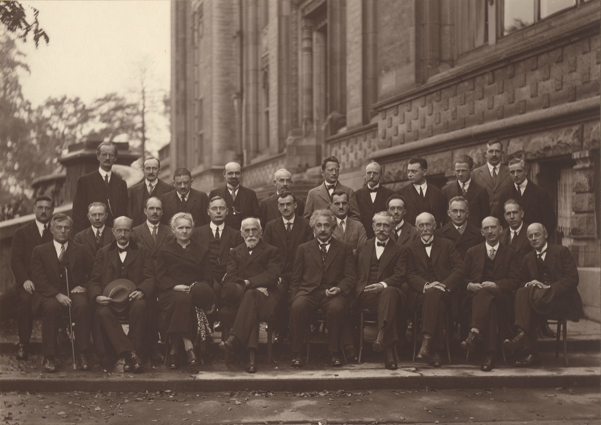
Part one
Relativity
Clocks and rulers depend on motion. Gravity changes the geometry in which they measure.
01 / Light
Chasing light doesn't slow it down
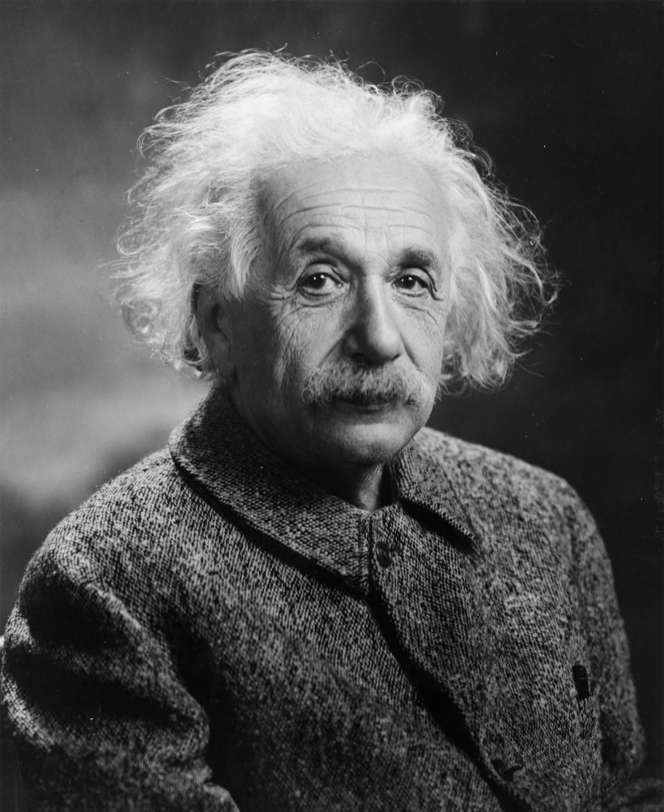
Light in a vacuum travels at about 670 million miles per hour. Locally, every inertial observer, one who isn't accelerating, measures that same speed. Moving toward the source or away from it doesn't change the answer. The exact value
At ordinary speeds, addition works well enough. Throw a ball forward at 20 mph from a truck doing 60, and a roadside observer measures almost exactly 80 mph. Replace the ball with a flash of light and the addition fails. Even an observer chasing the flash at 99 percent of light's speed still measures it moving away at the full speed of light.
The observers disagree about distances, elapsed times and which distant events happened simultaneously. Those differences fit together so that each gets the same local vacuum light speed. Relativity changes the clock and ruler accounting, rather than leaving a slower beam for the person who chases it. Special relativity
A body with nonzero rest mass needs ever more energy as it approaches that speed, and cannot reach it with finite energy. Photons have zero rest mass and already travel at light speed in vacuum.
Light's finite speed also gives distance a time cost. We see the Moon about 1.3 seconds ago and the Sun about eight minutes ago. Andromeda is roughly 2.5 million light-years away, so its arriving light began the trip about 2.5 million years ago. It is visible without a telescope from a sufficiently dark sky.
Every look is a look back
How old the light hitting your eye is, right now
Scroll sideways to read the diagram.
02 / Time
Moving clocks record less time
In an inertial reference frame, a moving clock accumulates less time between events than the synchronized clocks at rest in that frame. The moving clock's own reading is its proper time. The frame's shared time coordinate is a different thing.
A light clock makes the distinction visible. Put a pulse between two facing mirrors and count each round trip as a tick. Watch the clock pass by: while the light crosses the gap, the mirrors move sideways. The pulse follows a longer diagonal path in your frame, at the same light speed. More of your time passes between its ticks.
The light clock
One clock at rest and one moving, measured in the same frame
Scroll sideways to read the diagram.
The traveler sees nothing wrong with their clock. Their heartbeat and other local processes behave normally too. From their inertial frame, your clocks are moving and run slowly instead. This reciprocity doesn't produce a contradiction, because the frames also disagree about which distant clock readings should be compared at the same moment.
Clocks can nevertheless reunite with different totals. If one twin travels out and back while the other stays home, their paths through spacetime differ. A calculation along those paths gives the aging difference. You cannot settle that journey by saying each twin was merely moving relative to the other; the returning twin changed direction and reference frames.
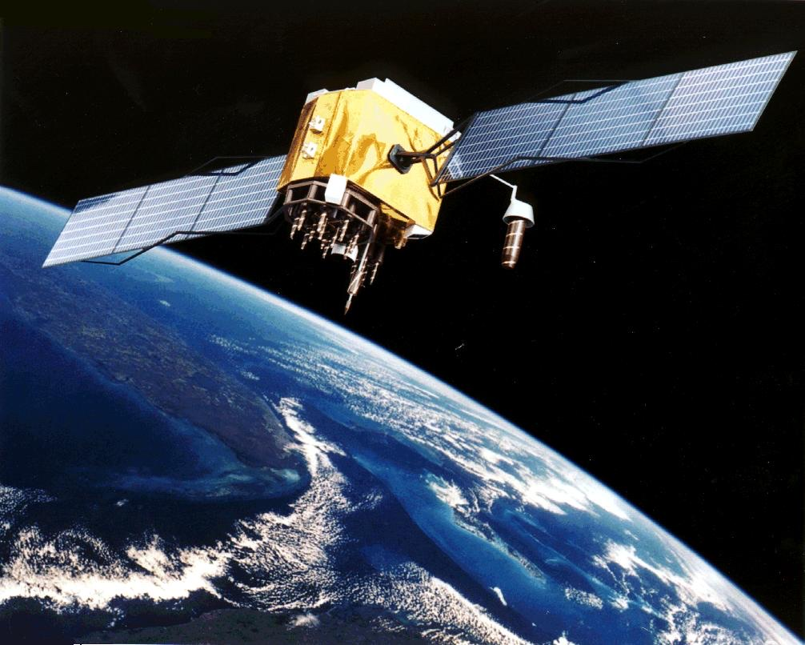
GPS needs both kinds of relativity. Satellite motion makes its clocks lose about 7 microseconds a day relative to clocks on Earth. Their higher position in Earth's gravitational field makes them gain about 45. The approximate net gain is 38 microseconds. Engineers account for this nominal offset in the clocks and apply further corrections for the satellites' actual orbits. The rounded figures; the full timing model
Cosmic-ray muons give another example. A muon at rest has a mean lifetime of about 2.2 microseconds, not a fixed expiry time. Multiplying that interval by light speed gives about 720 yards. Fast muons can reach the ground from much higher in the atmosphere because more Earth-frame time passes during their proper lifetime. In the muon's frame, the distance through the atmosphere is shorter. These are two descriptions of the same arrivals. Measured lifetime; muons and time dilation
03 / Mass
Mass comes with rest energy
An object has energy even when it is at rest. The amount is its mass multiplied by the speed of light squared: E0 = mc2. The zero matters here: this is rest energy, not an object's total energy in every frame.
For one gram, the calculation gives about 90 trillion joules. That is an energy equivalence, not a promise that you can extract that much from any gram of material. Most processes release only a small fraction of the material's rest energy. Energy and momentum
In the Sun's core, fusion turns hydrogen nuclei into helium through a chain of reactions. The final products have less rest mass than the starting ingredients. The difference appears as energy, carried initially by particles and radiation; neutrinos take some away directly. The remaining energy eventually helps supply the sunlight leaving the surface. The fusion reactions
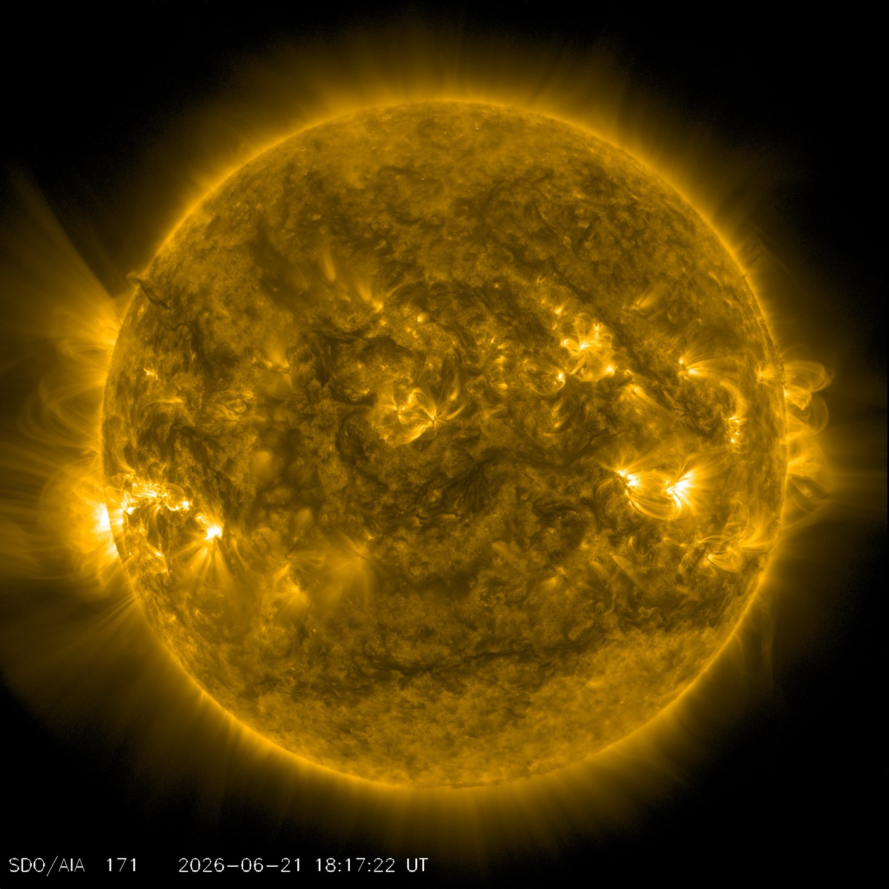
Mass accounting gets less intuitive inside a proton. Adding the rest masses of its three valence quarks does not come close to the proton's measured mass. Most comes from the dynamics of quantum chromodynamics: quark motion, gluon fields and quantum effects in their interactions. Exactly how that total is divided depends on the definitions and calculation scheme. A lattice calculation of proton mass
04 / Gravity
Free fall follows spacetime's geometry
In general relativity, a freely falling object follows a geodesic, a path set by spacetime's geometry. Near Earth, that path carries a dropped apple toward the ground. An orbit is free fall too: the Moon keeps falling while its sideways motion carries it around us.
The familiar rubber sheet with a heavy ball makes curvature easy to draw, but it borrows Earth's gravity to make the ball sink. It also leaves out time. A globe offers a more limited picture: two routes can converge even though neither turns toward the other.
Two straight paths that meet
Why "straight" can still bring you together
Scroll sideways to read the diagram.
You standing on the floor are not freely falling. The floor pushes upward, through the electromagnetic interactions between its atoms and yours, preventing the geodesic you would otherwise follow. That support is the weight you feel. Astronauts in orbit feel weightless because they and their spacecraft are falling together. Free fall and acceleration
Gravity also changes clock comparisons. For clocks held at rest near Earth, a higher clock runs faster than a lower one. The comparison depends on gravitational potential, not simply on how strong the local gravitational pull is. In the weak field near the surface, the fractional rate difference is approximately g times the height difference divided by c2.
In 2010, NIST researchers raised one optical atomic clock by 33 centimeters, about 13 inches, and measured the rate change against another through a fiber link. The same small height difference, maintained for 79 years under comparable conditions, would accumulate about 90 nanoseconds. That last number is a calculation across a specified height and duration, not a lifetime the experiment observed. Original experiment; NIST explanation
Light bends too
General relativity predicts a deflection of about 1.75 arcseconds for starlight passing close to the Sun's visible edge. Eclipse expeditions to Principe and Sobral in 1919 compared nearby stars' apparent positions with reference photographs. Their difficult measurements favored Einstein's prediction. The plates were an early test, with substantial uncertainties. The eclipse observations
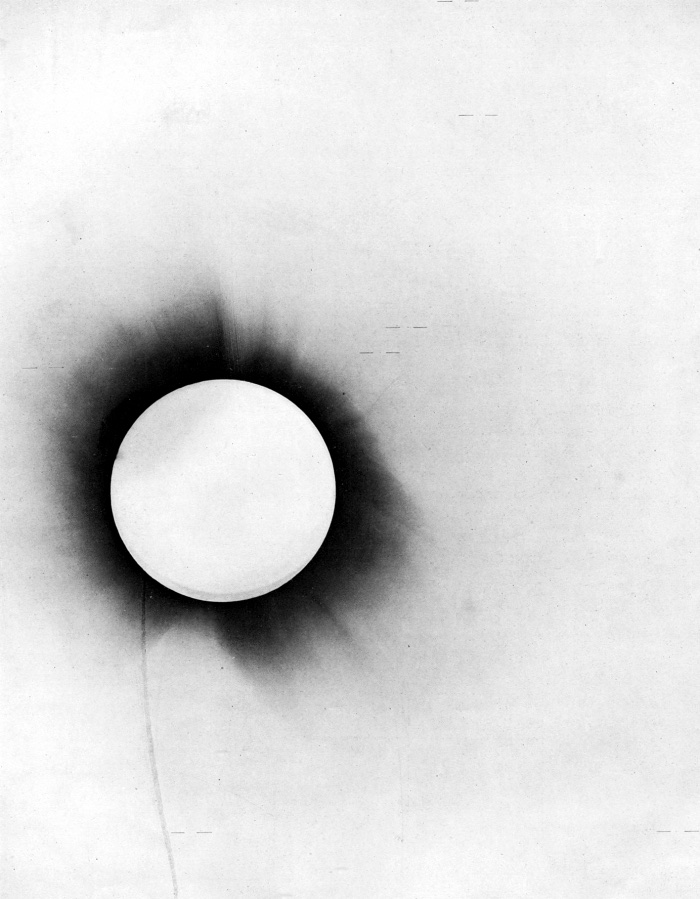
At larger distances, a massive foreground galaxy can bend light from a background galaxy into arcs or a ring. The alignment matters: a near-ring is not what every galaxy lens produces.
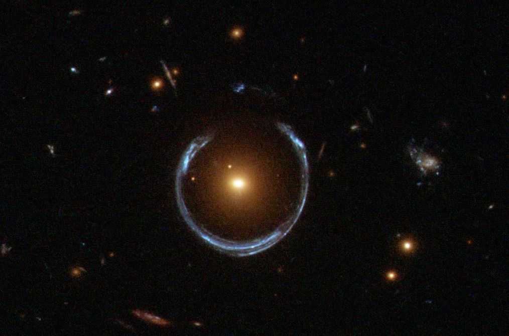
A black hole's shadow
A black hole has an event horizon, a boundary from inside which light cannot escape to distant observers. In 2019, the Event Horizon Telescope collaboration published a radio image of the region around the black hole in M87, about 55 million light-years away. The observations and models indicated a mass of about 6.5 billion Suns. Observations and image reconstruction
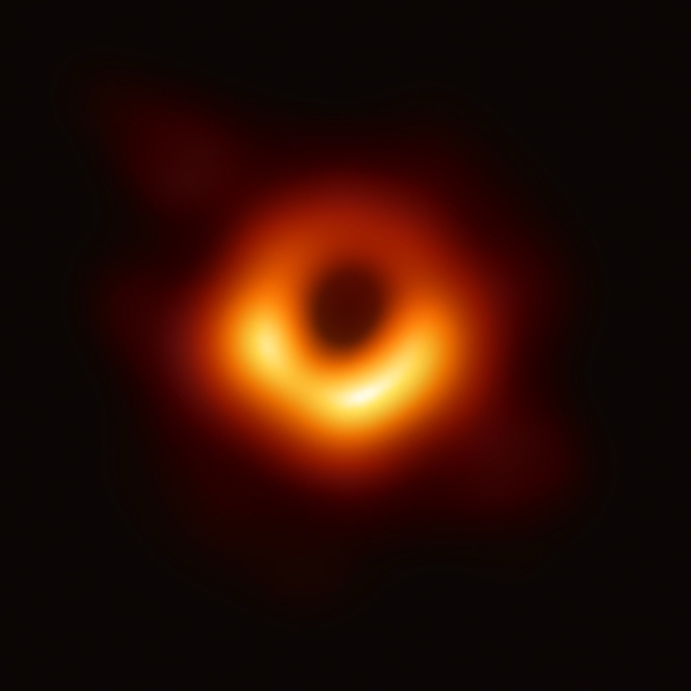
The dark patch is the black hole's shadow, enlarged by the bending and capture of light. It is not a direct photograph of the event horizon. The image was reconstructed from radio measurements made by widely separated telescopes, with independent imaging and calibration methods used to check the result.
Ripples measured on Earth
On September 14, 2015, LIGO's two detectors recorded a gravitational-wave signal from merging black holes. Matching the waveform to relativity models gave initial masses of roughly 36 and 29 Suns. The signal reached a strain of about 10−21, a fractional change in length. GW150914, original paper
Each detector has two arms about 2.5 miles long, or 4 kilometers. Multiplying that length by the quoted strain gives a differential arm-length signal on the scale of 4 × 10−18 meters. This is the change in the difference between the arms, not the size of a ripple photographed in space. The researchers compared the two sites, checked environmental disturbances and estimated the chance of a similar noise event using time-shifted data.
Part two
Quantum mechanics
Detections arrive one at a time. Their patterns require probability amplitudes, superposition and entanglement.
Quantum mechanics is easiest to meet in experiments with carefully isolated particles. That doesn't make it a law only for small things. The practical problem is preserving the relevant quantum coherence while a system interacts with its surroundings.
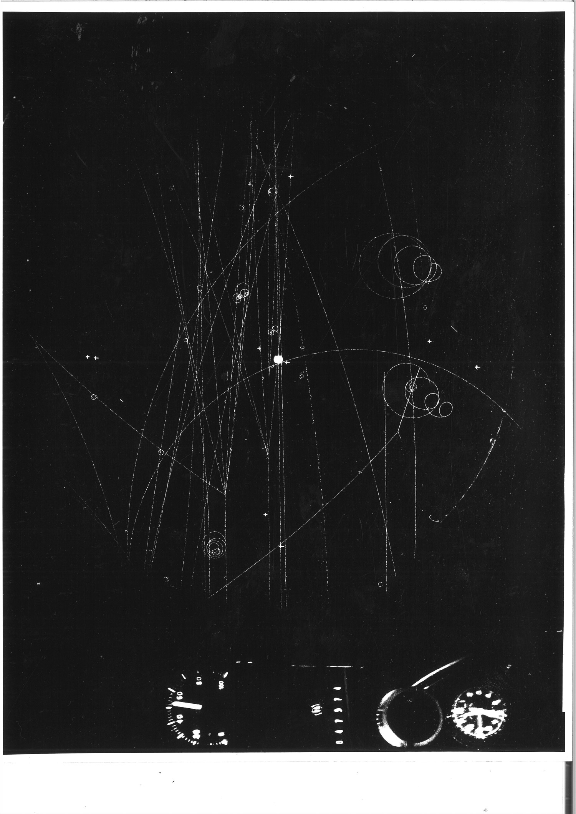
05 / Interference
Individual particles build a wave pattern
Send electrons through two narrow slits and record where they land. The screen registers separate dots. After enough detections, those dots can form alternating dense and sparse bands, an interference pattern.
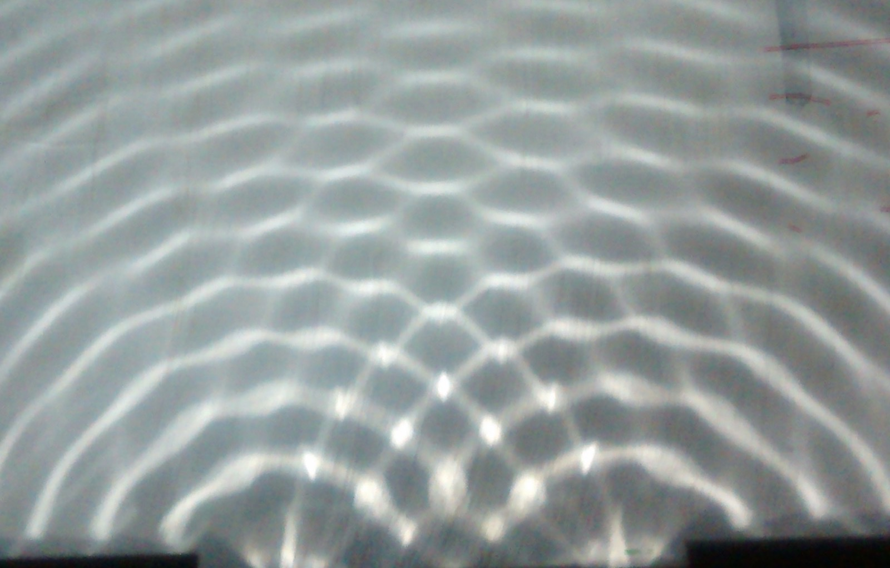
Water waves offer a familiar comparison. Where two waves arrive in step, their displacements add. Where a crest meets a trough, they can cancel. With electrons, the calculation combines probability amplitudes, mathematical quantities whose squared magnitudes give detection probabilities. Add the amplitudes for the alternative paths first, then take the square; the interference appears in that operation. The double-slit calculation
You can send the electrons slowly enough that they are individually separated, so the bands cannot be explained by electrons colliding with one another on the way. In a 2013 experiment, Roger Bach and colleagues detected electrons at about one per second and recorded the buildup. A movable mask let them compare one open slit with two. Experiment and apparatus
One dot at a time, into stripes
A schematic buildup of an interference pattern
Scroll sideways to read the diagram.
Calling this an electron going through both slits is useful shorthand for the two-path quantum state. It doesn't turn the electron into two little pellets, and the detection pattern alone doesn't settle every interpretation of what happened between source and screen.
If an interaction records which slit the electron used, that path information destroys the coherence needed for the full interference pattern. The probabilities then add as alternatives: the sum of two single-slit diffraction patterns, rather than interference between them. Partial path information can reduce the contrast instead of removing it completely. No human eye has to inspect the record for the interaction to matter.
Interference also works with larger objects. In 2019, researchers demonstrated it with molecules containing up to about 2,000 atoms, using a three-grating interferometer rather than two literal slits. That is a dated example of the scale experimentalists have reached, not a boundary where quantum mechanics stops. Molecular interference, full paper
Through a barrier
A quantum wave can extend into a region a classical particle of the same energy cannot enter. If that barrier is finite, an amplitude may survive beyond it, giving a chance of detecting the particle on the other side. This is tunneling. Its energy is conserved through this process.
A wave extends through a finite barrier
Quantum tunneling in one picture
Scroll sideways to read the diagram.
Tunneling helps fusion happen in the Sun. Positively charged nuclei repel each other, and ordinary thermal energies in the core give a far too small classical rate for them to get close enough to fuse. Quantum tunneling through the electric barrier raises that rate. The reactions are still rare, especially the first weak-interaction step in the Sun's main fusion chain. Barrier penetration and solar fusion
06 / Superposition
A superposition can interfere
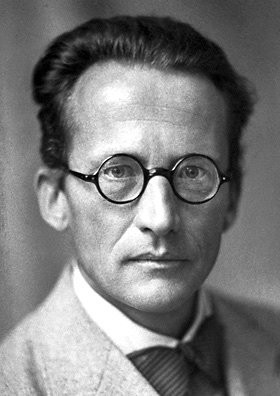
A quantum state can be a superposition of alternatives, such as the two paths through the slits. That is more than ordinary ignorance about which path a particle took: the alternatives can interfere.
Superposition is always relative to the alternatives being considered. A state can have a definite energy and a spread of possible positions, for example. It is inaccurate to say that a particle has no definite properties at all until someone looks.
Schrodinger's cat puts the measurement problem in a box. Imagine a radioactive event connected to a device that kills a cat. Choose the setup so there is a 50 percent chance of the event during the waiting period. If the quantum evolution of the atom, device and cat is treated as one uninterrupted process, it produces a superposition of correlated alternatives: undecayed atom with live cat, decayed atom with dead cat. Yet an opened box gives a definite recorded result. What connects those descriptions? Quantum measurement
Interaction with the environment explains an important part. Light, air and other surroundings become entangled with a large object. Information about its alternatives spreads into degrees of freedom we don't control. When we describe the object alone, interference between those alternatives is suppressed. This process is decoherence. It explains why recovering interference from a cat or a measuring apparatus would be extraordinarily difficult. It does not, by itself, select one outcome from the full superposition. Decoherence and its limits
Different accounts handle that remaining issue differently. Collapse models add a physical process to the theory. Other interpretations retain the full state and its branches, or add definite particle positions with nonlocal dynamics. Experiments constrain the proposals where their predictions differ. The usual laboratory predictions don't require consciousness to operate the detector.
07 / Uncertainty
Position and momentum have a trade-off
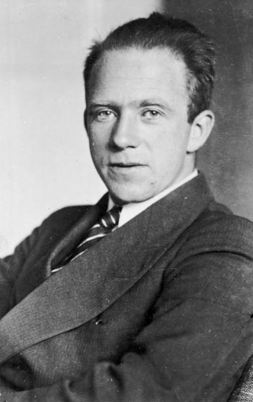
Prepare many particles in the same quantum state and measure their positions. Prepare the state again and measure momenta. The two distributions cannot both be arbitrarily narrow. Their standard deviations obey Δx Δp ≥ ℏ/2.
Here, momentum is mass times velocity for a slow massive particle, and ℏ is a fixed quantum constant. The inequality concerns the spreads of results for a prepared state. It is not simply a claim that a clumsy position measurement knocks the particle off course. Measurement disturbance is a related question, with its own inequalities. What the uncertainty relation says
Short in time, broad in frequency
A wave-packet analogy for position and momentum
Scroll sideways to read the diagram.
For a particle, a tightly localized wave packet requires a broad range of momentum components. A narrow momentum distribution requires a wave spread over a larger region. The sound picture shows the same mathematical relationship between a wave and its frequency content. It is an analogy for the spread, not proof that a particle is literally an audible wave.
This trade-off helps explain why a hydrogen atom has a finite size. Confining its electron ever closer to the nucleus raises its typical kinetic energy. The attraction lowers the potential energy. The lowest-energy state balances those effects at a finite scale, rather than describing a tiny planet that continually radiates and spirals inward. An estimate of atomic size
08 / Entanglement
The joint state matters
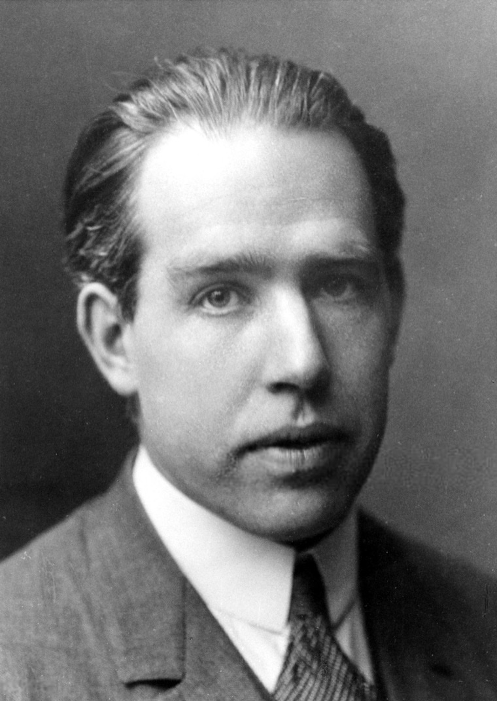
Two particles can be prepared in a pure joint quantum state that cannot be factored into separate states for each. That is entanglement. For a pair of spins prepared in a singlet state, measurements along the same axis give opposite results, although either result on its own is random.
Opposite answers alone prove very little. Put a left glove and a right glove in separate boxes, and opening one tells you about the other without any action across the distance. Bell's theorem becomes useful when each station can choose among different measurements. A local model, with the measurement choices independent of the hidden variables, faces limits on the combinations of correlations it can produce. Quantum mechanics predicts violations of those limits. The theorem and assumptions
One widely used version is the CHSH inequality. Give each station two possible settings and label the outcomes +1 or −1. Combine the four setting-pair correlations into a statistic called S. Local hidden-variable models with independent settings satisfy |S| ≤ 2. Quantum mechanics permits up to 2√2, about 2.83, with suitable states and settings.
A Bell test combines four correlations
CHSH statistic: local bound, quantum limit and one experiment
Scroll sideways to read the diagram.
In 2015, Bas Hensen and colleagues tested electron spins in diamonds about 0.8 miles apart. A photon signal first heralded an entangled pair. Each station then rapidly chose a setting and read its spin, before light could carry information about that choice to the other station. Reliable spin readout and this timing addressed the detection and locality loopholes together.
The 245 trials gave S = 2.42 ± 0.20. This is statistical evidence against the tested local models, not a claim that every trial violates an inequality. It retains assumptions, including independent setting choices and definite recorded outcomes. Bell tests do not prove that every physical property is created by looking, nor exclude nonlocal hidden-variable theories.
Entanglement still cannot send a message faster than light. Either station's own list looks random. Choosing a different measurement at the other station does not change that local outcome distribution into readable information. The correlations emerge when the two lists are compared through an ordinary communication channel. Relativistic quantum information and no-signaling
The unfinished part
Gravity still needs a quantum account
Special relativity and quantum mechanics already work together in quantum field theory. Researchers can also study quantum fields on an approximately classical curved spacetime. Neither achievement supplies a complete theory in which spacetime's geometry is itself quantum. Proposed approaches to that problem have not yielded an experimentally established successor to general relativity. Quantum gravity
Hawking's calculation is an example of what the intermediate approach can do. Quantum fields on a black-hole background predict thermal radiation reaching distant observers. That prediction has not been directly observed from an astronomical black hole. Large black holes would be colder than today's cosmic microwave background, so they absorb more energy from that background than they emit through this process. Hawking's 1975 paper
Extrapolating the radiation calculation suggests eventual evaporation in a sufficiently cold environment. The final stage is precisely where its approximation stops being dependable. We don't yet have an established answer for that endpoint.
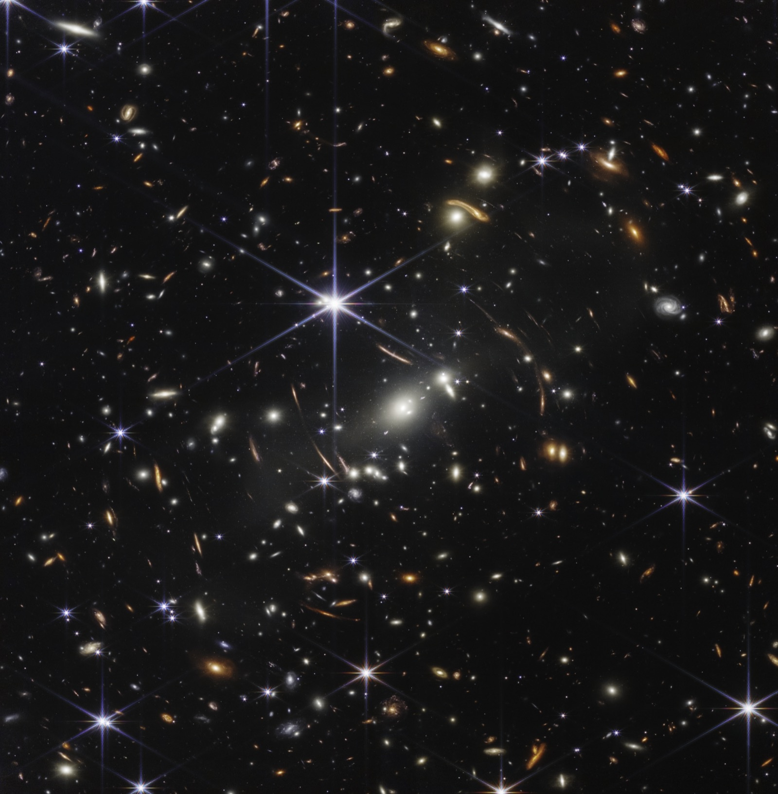
What spacetime does when its own quantum effects become unavoidable remains an open experimental question.
Sources
Experiments, calculations and illustrations
The diagrams are explanatory drawings, not measurements. Links beside the claims lead to the relevant experiments or explanations. The notes below identify the calculations behind the rounded numbers and the assumptions that matter for interpreting them.
Source notes and calculations
Light and clocks
- Vacuum light speed. NIST's exact value is 299,792,458 meters per second, about 670.6 million mph. Feynman, volume I, chapter 15, develops frame comparisons, light clocks and time dilation. The light-clock SVG is schematic and has no specified velocity.
- Look-back times. Rounded NASA distances for the Moon, Sun and Proxima Centauri, and Andromeda supply the figure's estimates. Two feet divided by light speed gives about 2 nanoseconds for the hand example. The diagram uses an approximate logarithmic scale.
- GPS. Neil Ashby's 2003 review distinguishes proper time from the system's coordinate time and derives the nominal clock offset. The gain from gravity and loss from motion are rounded in Richard Pogge's university explanation. The post does not turn the clock offset into a universal daily position error.
- Muon lifetime. The 2024 Particle Data Group listing gives a mean rest lifetime of approximately 2.197 microseconds. Multiplying by light speed gives about 659 meters, or 720 yards. This is a characteristic length calculated from the mean, not a maximum range or a fixed decay deadline.
- Expansion. Davis and Lineweaver (2004) distinguish cosmological recession speeds, locally measured speeds and horizons. Superluminal recession does not by itself imply that a galaxy is unobservable.
- A measured height difference. Chou and colleagues (2010), Science 329, 1630, compared aluminum-ion optical clocks over a noise-canceled fiber link. Raising one clock by 33 centimeters gave a fractional rate change consistent with g Δh / c2. Applying that approximation for 79 years gives about 90 nanoseconds, with the height difference held constant and Earth's near-surface conditions assumed. The lifetime extrapolation is also explained in the NIST release.
Energy and gravity
- Energy accounting. Feynman, volume I, chapter 16, gives the energy-momentum relation. For one gram, mc2 is about 8.99 × 1013 joules. Princeton's stellar-fusion notes describe the reaction chain and the tunneling barrier.
- The Sun's radiated mass-equivalent. The IAU's 2015 nominal solar luminosity, 3.828 × 1026 watts, is a standard conversion value. Dividing by c2 gives about 4.26 × 109 kilograms per second, or 4.7 million US short tons. It is an estimate of the mass-equivalent carried by sunlight, not an exact measurement of the Sun's changing luminosity or all of its mass loss.
- Proton mass. Yang and colleagues (2018) use lattice quantum chromodynamics and state their renormalization scheme and uncertainties for the mass decomposition. The post retains the qualitative result without presenting scheme-dependent fractions as universal pieces.
- Free fall. Einstein Online's equivalence-principle explanation distinguishes supported observers from freely falling ones. The globe SVG illustrates geodesics on a surface, not the equations of motion in spacetime.
- The 1919 eclipse. The Max Planck Society's historical account gives the expeditions, the 1.75-arcsecond prediction and the measurement uncertainties. ESA / Hubble identifies the Cosmic Horseshoe's lens and background galaxy.
- M87. The ESO / Event Horizon Telescope release explains the 2017 radio observations, 2019 publication, shadow, estimated mass and independent reconstruction checks. The displayed image is false-color radio imaging.
- GW150914. The original LIGO / Virgo paper defines strain as the differential arm-length change divided by the 4-kilometer arm length. Thus hL at a strain of 10−21 is approximately 4 × 10−18 meters. Its black-hole masses are waveform-based estimates, not exact counts. Calibration, environmental checks and time-shifted noise estimates enter the detection analysis.
Quantum experiments and their interpretation
- Interference. Feynman, volume III, chapter 1, distinguishes adding amplitudes from adding probabilities. Bach and colleagues (2013) used a low-intensity electron source, nanometer slits, a movable mask and individual detections to compare one- and two-slit patterns. Their experiment is not the source of this post's drawn dots, nor a which-path detector experiment.
- Large-molecule interference. Fein and colleagues (2019), full manuscript, studied molecules up to about 2,000 atoms with a three-grating interferometer. They scanned a grating and measured molecular flux, comparing fringe behavior with quantum and classical predictions. This is an example from 2019, not a claim about today's size record.
- Measurement and decoherence. The Stanford Encyclopedia's measurement entry describes the problem and alternative accounts. Schlosshauer's review distinguishes suppression of local interference from a physical collapse or selection of one outcome.
- Uncertainty and atoms. The Stanford Encyclopedia's uncertainty entry distinguishes the position-momentum standard-deviation relation from disturbance relations. Feynman, volume III, chapter 2, estimates hydrogen's finite size from competing kinetic and potential energies. The sound SVG is a schematic Fourier analogy, with no measured sound data.
- Bell's theorem. The Stanford Encyclopedia entry lays out locality and measurement-independence assumptions. The singlet example in the main text is a pure state. More generally, a mixed state is entangled if it cannot be expressed as a mixture of product states. For the convention used here, S = E00 + E01 + E10 − E11, where each E is the average product of the two ±1 outcomes at that setting pair. Equivalent sign conventions give the same bound.
- The Hensen experiment. Hensen and colleagues (2015) separated stations by 1,280 meters and used heralded entanglement, fast random setting choices and spin readout. The figure distinguishes the theoretical bounds from their measured S = 2.42 ± 0.20. The paper's conservative null-model probability bound is 0.039; its assumptions and treatment of memory and imperfect randomness matter to that statement.
- No faster-than-light message. Peres and Terno (2004) explain why local quantum operations, with distant outcomes unread, leave the other station's marginal statistics unchanged under the stated relativistic locality conditions.
The open problem
- Quantum gravity. The Stanford Encyclopedia overview distinguishes quantum fields on classical spacetime from a theory of quantum geometry and discusses the limits of current evidence.
- Hawking radiation. Hawking's full 1975 paper, Particle Creation by Black Holes, treats quantum fields on an approximately classical black-hole background. The linked copy is a mirror of the original paper. Its derivation is not evidence of radiation detected from an astronomical black hole, and its approximation does not establish the final evaporation stage. CERN's current experiment overview identifies black-hole Hawking radiation as still undetected.
Cover image: the M87 black-hole image, Event Horizon Telescope Collaboration, CC BY 4.0. Photographs and illustrations retain their individual credits. The seven SVG diagrams were drawn in code for this post.